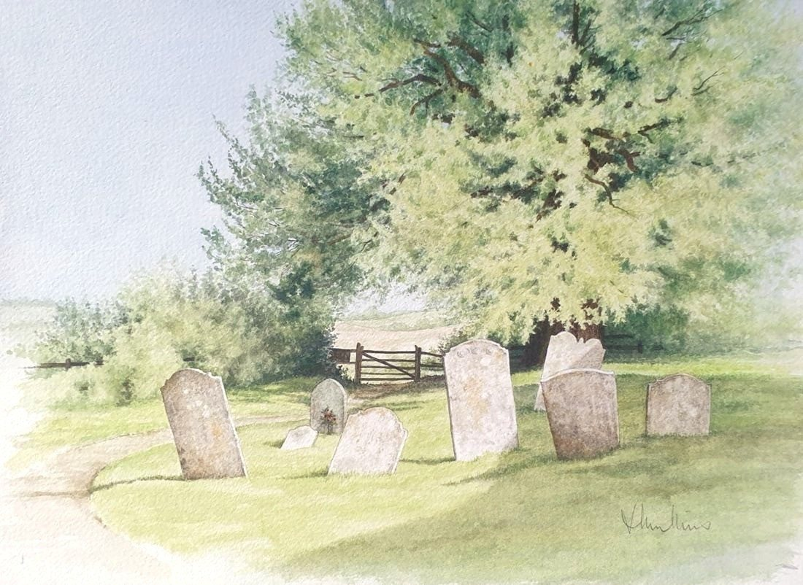

Old Graveyard in Didling
No. 63- Medium
- Watercolour on paper
- Size
- 26 × 35 cm
- Year
- 2006
- Inspired by
- Didling, West Sussex
- Price
- £195
This old graveyard surrounds a very old church in West Sussex, often called the Shepherd's Church. It has a peaceful, gentle atmosphere, as it is far from the noise and rush of the modern world and has been there for centuries.
Ask about this paintingOr email enquiries@joanmullinsart.co.uk, quoting No. 63. UK only. Collection from Nantwich is free; UK postage is quoted when you enquire.
 The Yellow Bush
The Yellow Bush Near the Austrian Border
Near the Austrian Border A Path in the Wirral
A Path in the Wirral